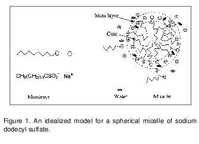

Micelle is an aggregate of surfactant molecules in a solvent. Surfactants, also known as surface-active agents, reduce the liquid surface tension and find applications in many areas like chemistry, biology and pharmacy. Sodium dodecyl sulfate (SDS: CH3(CH2)11OSO3- Na+), cetyltrimethylammonium bromide (CTAB: CH3(CH2)14CH2N+(CH3)3Br- ), etc. are some examples of common surfactants. Many types of toothpaste contain the surfactant, SDS. Surfactants are amphiphilic molecules containing both non-polar long-chain hydrocarbon group, called “tail” and polar or ionic “head” groups. In polar solvents, for example in water, due to the dual character of the amphiphile surfactant molecules self-associate forming aggregate structures, called micelles, and the process of micelle formation is known as micellization (Figure 1). In micelles the hydrophobic part forms the core of the micelle and the polar head groups point outward at the micelle-water interface and hydrated by a number of water molecules. Based on the structure of the surfactant molecules, micelles can be cationic, anionic, amphiphilic (zwitterionic), or nonionic. The concentration (within a narrow range) above which micelles form is called the critical micelle concentration (CMC). Above the CMC, monomers and micelles exist in dynamic equilibrium. Micelles are small colloidal particles, formed by the association of molecules. This is why micelles are called as association colloids. The micellar solutions are microheterogeneous medium. The value of the CMC can be determined by the change in the physicochemical properties of the surfactant solution above the CMC due association of the molecules. Experimentally, the CMC is found by plotting a graph of a physical property as a function of surfactant concentration. In plot an abrupt change of slope marks the CMC. The choice of CMC is never unambiguous, since the change in slope occurs over a more or less narrow range of concentrations, whose magnitude depends on the physical property being measured and sometimes on the nature of the data and on the way they are plotted.
The CMC can be affected by change in temperature and pressure. It decreases with increasing hydrocarbon chain-length of the apolar groups, and for ionic surfactants it also depends on the nature and concentration of counterions in solution. Added electrolytes decrease the CMC, and the effect increases with decreasing charge density of the counterion.
Determination of Critical Micelle Concentration (CMC) of sodium dodecylsulfate (SDS).
Fe(OH)3 colloid can be prepared in two ways: by peptization method and by hydrolysis method. In the peptization method, a freshly prepared precipitate is converted into colloidal solution by the addition of a suitable electrolyte. The electrolyte added acts as peptizing agent or dispersion agent by adsorbing onto the surface of tiny particles in precipitate and keeping them suspended in solution due to electrostatic repulsion. For example, if freshly prepared ferric hydroxide precipitate is shaken with a small quantity of FeCl3 (peptizing agent) solution, a dark reddish brown colloidal solution of Fe(OH)3 is formed. On the other hand, if a concentrated solution of FeCl3 is heated, hydrolysis occurs producing colloidal Fe(OH)3 particles and aqueous HCl. Some of HCl may escape as gas. The dark brown solution turns darker as a precipitate of Fe(OH)3 forms.
To start the experiment do the following:
| S. No | Sodium dodecyl sulfate (SDS) concentration [SDS] × 102 M | Conductance | Specific Conductance |
|---|---|---|---|
| 1 | 0.000 | ||
| 2 | 0.100 | ||
| 3 | 0.200 | ||
| 4 | 0.250 | ||
| 5 | 0.300 | ||
| 6 | 0.400 | ||
| 7 | 0.500 | ||
| 8 | 0.700 | ||
| 9 | 0.800 | ||
| 10 | 1.000 | ||
| 11 | 1.300 | ||
| 12 | 1.600 | ||
| 13 | 2.000 | ||
| 14 | 2.500 | ||
| 15 | 3.000 | ||
| 16 | 4.000 | ||
| 17 | 5.000 |